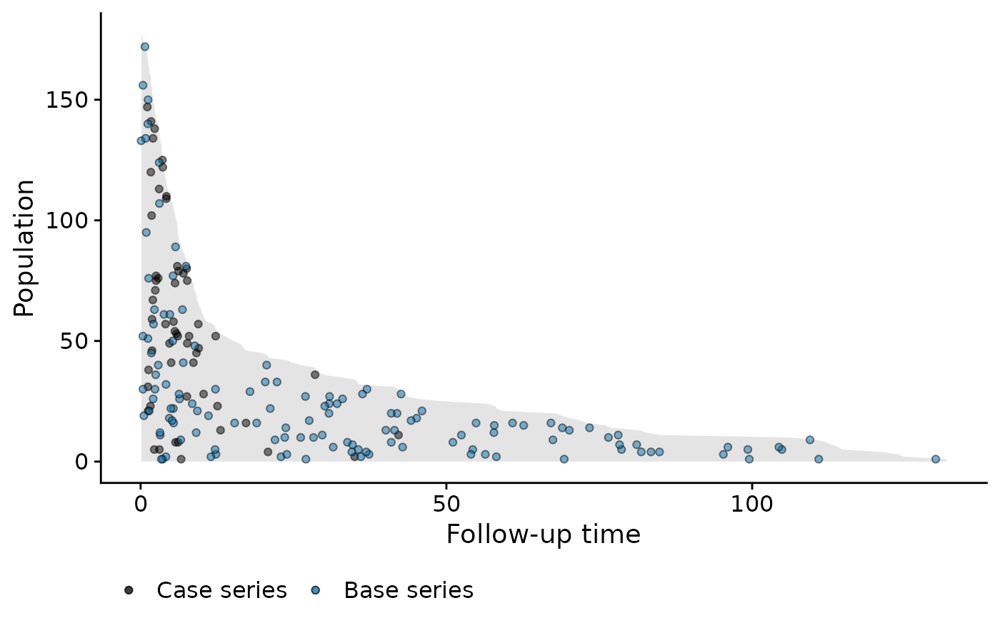

plot method for objects of class popTime
Create a data frame for population time plots to give a visual representation of incidence density
# S3 method for popTime
plot(
x,
...,
xlab = "Follow-up time",
ylab = "Population",
add.case.series = TRUE,
add.base.series = FALSE,
add.competing.event = FALSE,
casebase.theme = TRUE,
ribbon.params = list(),
case.params = list(),
base.params = list(),
competing.params = list(),
color.params = list(),
fill.params = list(),
theme.params = list(),
facet.params = list(),
ratio = 1,
censored.indicator,
comprisk = FALSE,
legend = TRUE,
ncol,
legend.position,
line.width,
line.colour,
point.size,
point.colour
)
popTime(data, time, event, censored.indicator, exposure, percentile_number)
checkArgsTimeEvent(data, time, event)an object of class popTime or popTimeExposure.
Ignored.
The title of the respective axis. Default: 'Follow-up time' for xlab and 'Population' for ylab
Logical indicating if the case series should be added to the plot. Default: TRUE
Logical indicating if the base series should be added to the plot. Default: FALSE
Logical indicating if the competing event should be added to the plot. Default: FALSE
Logical indication if the casebase theme be used. The
casebase theme uses theme_minimal. Default: TRUE.
A list containing arguments that are passed to
geom_ribbon which is used to plot the
population-time area. These arguments will override the function defaults.
For example, you can set ribbon.params = list(colour = 'green') if
you want the area to be green.
A list containing arguments
that are passed to geom_point which is used to plot
the case series, base series, competing events. These arguments will
override the function defaults. For example, you can set case.params
= list(size = 1.5) if you want to increase the point size for the case
series points. Note: do not use this argument to change the color of the
points. Doing so will result in unexpected results for the legend. See the
color.params and fill.params arguments, if you want to change
the color of the points.
A list containing arguments that are passed to
scale_color_manual which is used to plot the legend.
Only used if legend=TRUE. These arguments will override the function
defaults. Use this argument if you want to change the color of the points.
See examples for more details.
A list containing arguments that are passed to
scale_fill_manual which is used to plot the legend.
Only used if legend=TRUE. These arguments will override the function
defaults. Use this argument if you want to change the color of the points.
See examples for more details.
A list containing arguments that are passed to
theme. For example theme.params =
list(legend.position = 'none').
A list containing arguments that are passed to
facet_wrap which is used to create facet plots. Only
used if plotting exposure stratified population time plots. These arguments
will override the function defaults.
If add.base.series=TRUE, integer, giving the ratio of the
size of the base series to that of the case series. This argument is passed
to the sampleCaseBase function. Default: 10.
a character string of length 1 indicating which
value in event is the censored. This function will use
relevel to set censored.indicator as the
reference level. This argument is ignored if the event variable is a
numeric
If add.base.series=TRUE, logical indicating whether we
have multiple event types and that we want to consider some of them as
competing risks. This argument is passed to the
sampleCaseBase function. Note: should be TRUE if your
data has competing risks, even if you don't want to add competing risk
points (add.competing.event=FALSE). Default: FALSE
Logical indicating if a legend should be added to the plot.
Note that if you want to change the colors of the points, through the
color.params and fill.params arguments, then set
legend=TRUE. If you want to change the color of the points but not
have a legend, then set legend=TRUE and theme.params =
list(legend.position = 'none'. Default: FALSE
Deprecated. Use facet.params instead.
Deprecated. Specify the legend.position argument
instead in the theme.params argument. e.g. theme.params =
list(legend.position = 'bottom').
Deprecated.
Deprecated. specify the fill argument instead in
ribbon.params. e.g. ribbon.params = list(fill = 'red').
Deprecated. specify the size argument instead in the
case.params or base.params or competing.params
argument. e.g. case.params = list(size = 1.5).
Deprecated. Specify the values argument instead in the
color.params and fill.params argument. See examples for
details.
a data.frame or data.table containing the source
dataset.
a character string giving the name of the time variable. See Details.
a character string giving the name of the event variable
contained in data. See Details. If event is a numeric
variable, then 0 needs to represent a censored observation, 1 needs to be
the event of interest. Integers 2, 3, ... and so on are treated as
competing events. If event is a factor or character and
censored.indicator is not specified, this function will assume the
reference level is the censored indicator
a character string of length 1 giving the name of the
exposure variable which must be contained in data. Default is
NULL. This is used to produced exposure stratified plots. If an
exposure is specified, popTime returns an exposure
attribute which contains the name of the exposure variable in the dataset.
The plot method for objects of class popTime will use this exposure
attribute to create exposure stratified population time plots.
Default=0.5. Give a value between 0-1. if the percentile number of available subjects at any given point is less than 10, then sample regardless of case status. Depending on distribution of survival times and events event points may not be evenly distributed with default value.
The methods for plot return a population time plot, stratified
by exposure status in the case of popTimeExposure. Note that these
are ggplot2 objects and can therefore be used in subsequent ggplot2
type plots. See examples and vignette for details.
An object of class popTime (or popTimeExposure if
exposure is specified), data.table and data.frame in this
order! The output of this function is to be used with the plot method for
objects of class popTime or of class popTimeExposure, which
will produce population time plots. This dataset augments the original data
with the following columns:
value of
the event variable in the original dataset - the one specified by the
event user argument to this function
renames the user specified time column to time
renames the user specified event argument to event
This function leverages the ggplot2 package to build
population time plots. It builds the plot by adding layers, starting with a
layer for the area representing the population time. It then sequentially
adds points to the plots to show the casebase sampling mechanism. This
function gives user the flexibility to add any combination of the
case.series, base.series and competing events. The case series and
competing events are sampled at random vertically on the plot in order to
visualise the incidence density using the popTime function.
That is, imagine we draw a vertical line at a specific event time. We then
plot the point at a randomly sampled y-coordinate along this vertical line.
This is done to avoid having all points along the upper edge of the plot
(because the subjects with the least amount of observation time are plotted
at the top of the y-axis). By randomly distributing them, we can get a
better sense of the incidence density. The base series is sampled
horizontally on the plot using the sampleCaseBase function.
It is assumed that data contains the two columns
corresponding to the supplied time and event variables. If either the
time or event argument is missing, the function looks for
columns that contain the words "time", "event", or
"status" in them (case insensitive). The function first looks for
the time variable, then it looks for the event variable. This order of
operation is important if for example the time variable is named
"event time" and the event variable is named "event
indicator". This function will first (automatically) find the time
variable and remove this as a possibility from subsequent searches of the
event variable. The following regular expressions are used for the time and
event variables:
"[\s\W_]+time|^time\b"
"[\s\W_]+event|^event\b|[\s\W_]+status|^status\b"
This allows for "time" to be preceded or followed by one or more
white space characters, one or more non-word characters or one or more
underscores. For example, the following column names would be recognized by
the function as the "time" variable: "time of death",
"death_time", "Time", "time", "diagnosis_time", "time.diag", "diag__time".
But the following will not be recognized: "diagtime","eventtime",
"Timediag"
geom_point,geom_ribbon,theme, scale_colour_manual, scale_fill_manual, sampleCaseBase
plot.popTime
# change color of points
library(ggplot2)
data("bmtcrr")
popTimeData <- popTime(data = bmtcrr, time = "ftime", event = "Status")
fill_cols <- c("Case series" = "black", "Competing event" = "#009E73",
"Base series" = "#0072B2")
color_cols <- c("Case series" = "black", "Competing event" = "black",
"Base series" = "black")
plot(popTimeData,
add.case.series = TRUE,
add.base.series = TRUE,
add.competing.event = FALSE,
legend = TRUE,
comprisk = TRUE,
fill.params = list(
name = element_blank(),
breaks = c("Case series", "Competing event", "Base series"),
values = fill_cols
),
color.params = list(
name = element_blank(),
breaks = c("Case series", "Competing event", "Base series"),
values = color_cols
)
)

data("bmtcrr")
popTimeData <- popTime(data = bmtcrr, time = "ftime")
#> 'Status' will be used as the event variable
class(popTimeData)
#> [1] "popTime" "data.table" "data.frame"
popTimeData <- popTime(data = bmtcrr, time = "ftime", exposure = "D")
#> 'Status' will be used as the event variable
attr(popTimeData, "exposure")
#> [1] "D"